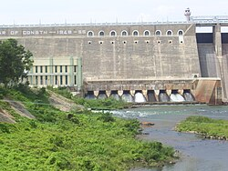
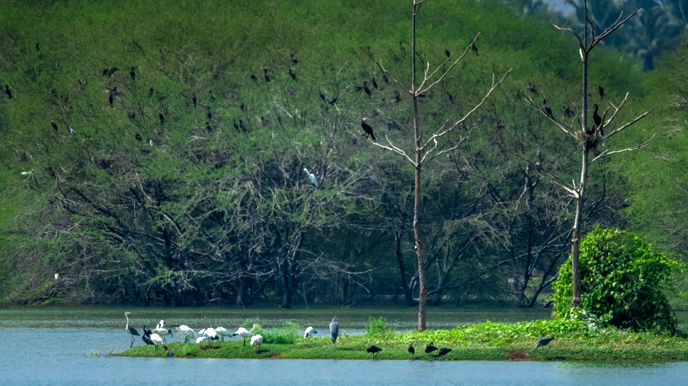

History of Erode
Erode was a part of Coimbatore and the history of Erode is thus very closely linked with the history of Coimbatore. The total area of Erode and Coimbatore formed the ancient “Kongu” country which was also known as the “Kongu Nadu”. The history of Kongu Nadu goes back to the Sangam Era. In the early days, the regions were occupied by tribes like “Kosars”, whom the Rashtrakuta rulers defeated to set foot in the region. The capital of the Kosars was ‘Kosamputhur’ or the modern day ‘Coimbatore’. Chola rulers defeated the Rashtrakutas to set foot in Kongu and during the time of Raja Chola, it reached the height of supremacy. Later this area was controlled by Chalukya, Pandyas and Hoysalas. Kulasekara Pandian was the last independent Pandya ruler and then Erode came under the rule of the Muslim rulers of Delhi. But, only after a few days, the Vijayanagar Kingdom gained the control of Erode in 1378 CE. The Madurai Nayaks ruled Erode from 1559 to 1736. The Mysore Rulers like Hyder Ali and Tipu Sultan also ruled Erode.
During the time of Hydar Ali, Erode had an estimated population of 1500 and there were 300 houses in the town. The town also had a mud fort which stationed a garrison of 4000 soldiers. The fort was surrounded by coconut grooves and River Kauvery. Due to the attacks by the Marathas, Mysore Army and finally the British East India Company, the fort was almost ruined.
History of Erode
Erode Under the British
Erode district was bifurcated from the Coimbatore district in the year 1979. In 1871, Erode town was constituted as a municipality and after it got separated from Coimbatore it was promoted to special grade in 1980. The separate corporation of Erode began its function from 1st January, 2008.
Bhavanisagar Dam or Lower Bhavani Dam, is located in Erode district, Tamil Nadu, India.[2] The dam is constructed on the Bhavani river.[1] It is one of the world's largest earthen dams. Thyagi M.A. Eswaran, the Erode MLA was instrumental in bringing the Bhavanisagar Dam Project. M. A. Eswaran, was born to Muthukaruppan Pillai and Venkatalakshmi on 25 October 1895 at Karungalpalayam in Erode. The first major irrigation project executed in Tamil Nadu after Independence, it turned Erode, Tiruppur, and Karur districts into a fertile landscape, irrigating 2,47,247 acres for the cultivation of paddy and other crops, besides generating 18 MW through two power generation houses. M.A.Eswaran was unanimously elected as MLA for Erode area in the Madras Provincial Assembly in 1946. Apart from his contribution to the freedom struggle, he worked for the implementation of the Lower Bhavani Project. Until his death in 22.05.1978, he sacrificed his entire life for the welfare of the people. The dam is situated some 16 km (9.9 mi) west of Sathyamangalam, is 17 km (11 mi) North of Punjai Puliampatti, is 35 km (22 mi) from Gobichettipalayam and is 36 km (22 mi) north-east to Mettupalayam.


Vellode Birds Sanctuary is a bird sanctuary located in Erode District, Tamil Nadu, India. The sanctuary covers an area of .77 km2 (0.30 sq mi).[2] The sanctuary is located near Vellode, about 12 km from Erode.[3] It has been designated as a protected Ramsar site since 2022.[1]
The sanctuary is built around Periyakulam lake surrounded with bushes. More than 20,000 birds visit during the migration period from November to March. The sanctuary features thousands of birds coming from various countries, some of which can be easily identified. The bird species include bar-headed goose, black-tailed godwit, barn swallow, woolly-necked stork, Eurasian spoonbill, greater spotted eagle, blue-tailed bee-eater, little stint, spot billed pelican, purple swamphen, and yellow wagtail.
Bargur Hills in Erode district of Tamil Nadu, India, were recently designated as the "Thanthai Periyar Wildlife Sanctuary". This protected area, spanning 80,567 hectares, will act as a crucial corridor for tiger and elephant movement between the Western and Eastern Ghats. The hills are known for their diverse forest types, including semi-evergreen, moist-deciduous, and dry-deciduous forests, and are home to various wildlife, including the unique Bargur cattle breed.
Key aspects of Bargur Hills:
Location:
Located in Erode district, Tamil Nadu, near the border with Karnataka.
Geographic Features:
The hills are part of the Western Ghats and are known for their diverse forest types, including tropical semi-evergreen forests, tropical moist-deciduous forests, and tropical dry-deciduous forests.
Wildlife:
The area is home to various wildlife, including tigers, elephants, and the Bargur cattle breed.